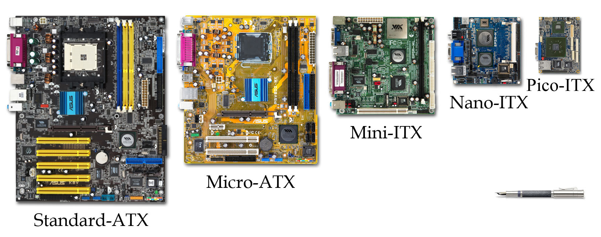
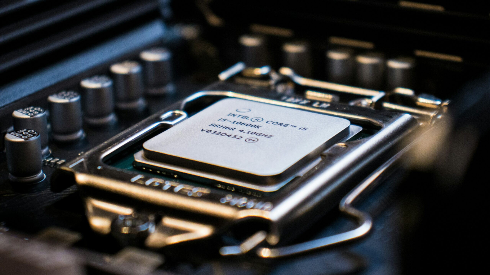
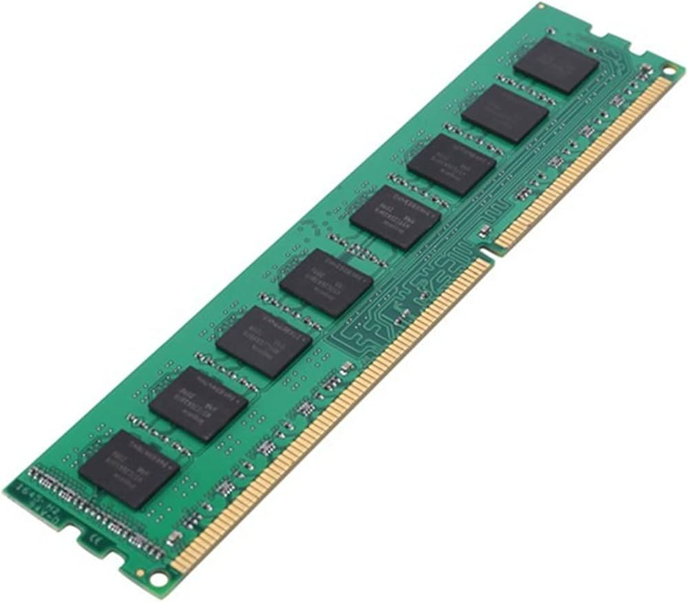
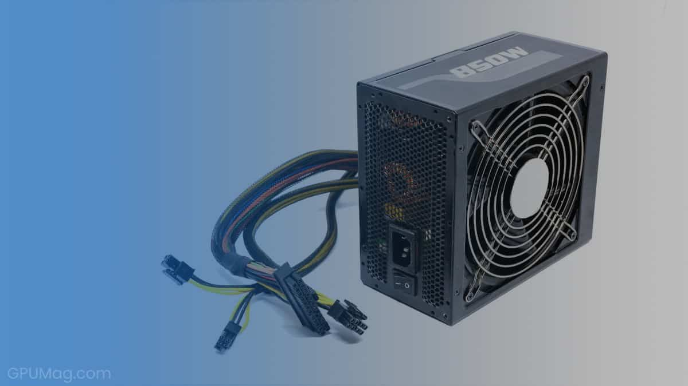

Motherboard
The motherboard is the main circuit board that connects all hardware components. It allows communication between the CPU, RAM, storage, and peripherals. Mini summary: Central hub for your PC.
CPU (Central Processing Unit)
The CPU is the brain of the computer, executing instructions and processing data. Mini summary: Core component for performance.
RAM (Random Access Memory)
RAM temporarily stores data for the CPU while programs are running. More RAM improves multitasking and speed. Mini summary: Temporary memory for fast access.
Power Supply Unit (PSU)
The PSU converts AC power from the wall to DC power for the PC components. Mini summary: Ensures stable power and protects hardware.
Storage Devices
Storage devices like SSDs and HDDs keep your data permanently. SSDs are faster; HDDs have more capacity. Mini summary: Permanent data storage.
Peripheral Connections
Includes USB, HDMI, audio, and network ports for connecting external devices. Mini summary: Connects your PC to the outside world.
Assembly & Safety
Follow safety guidelines: anti-static precautions, cable management, and proper installation. Mini summary: Safe and organized PC building.